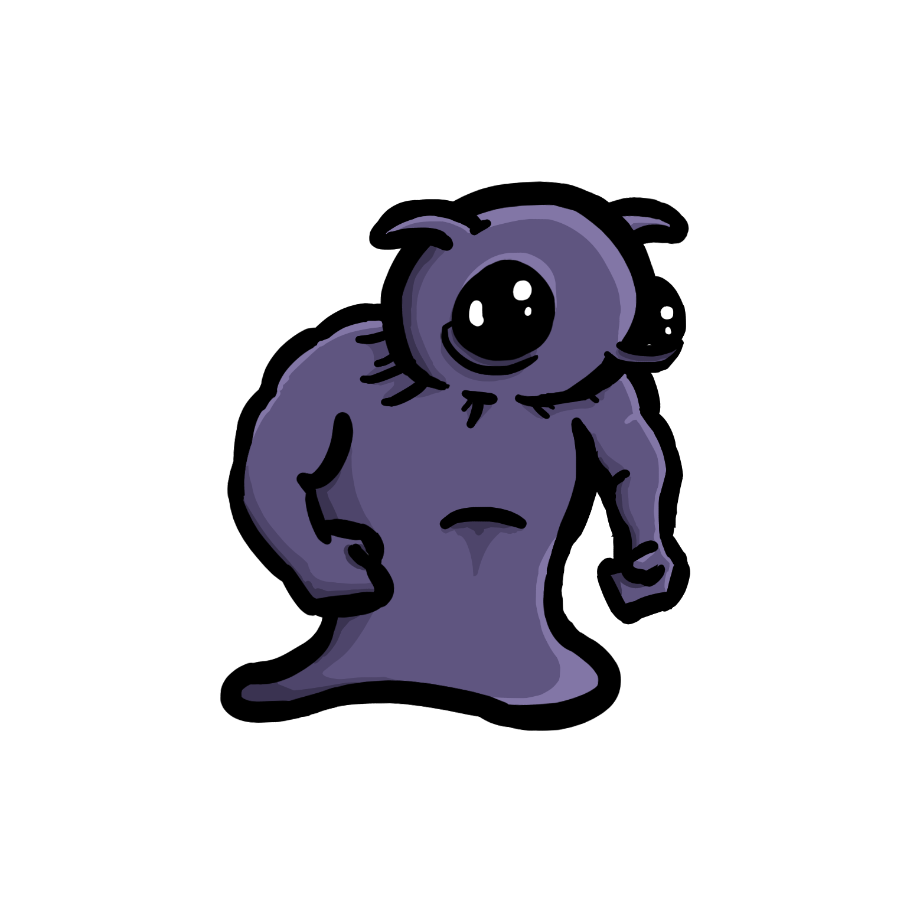
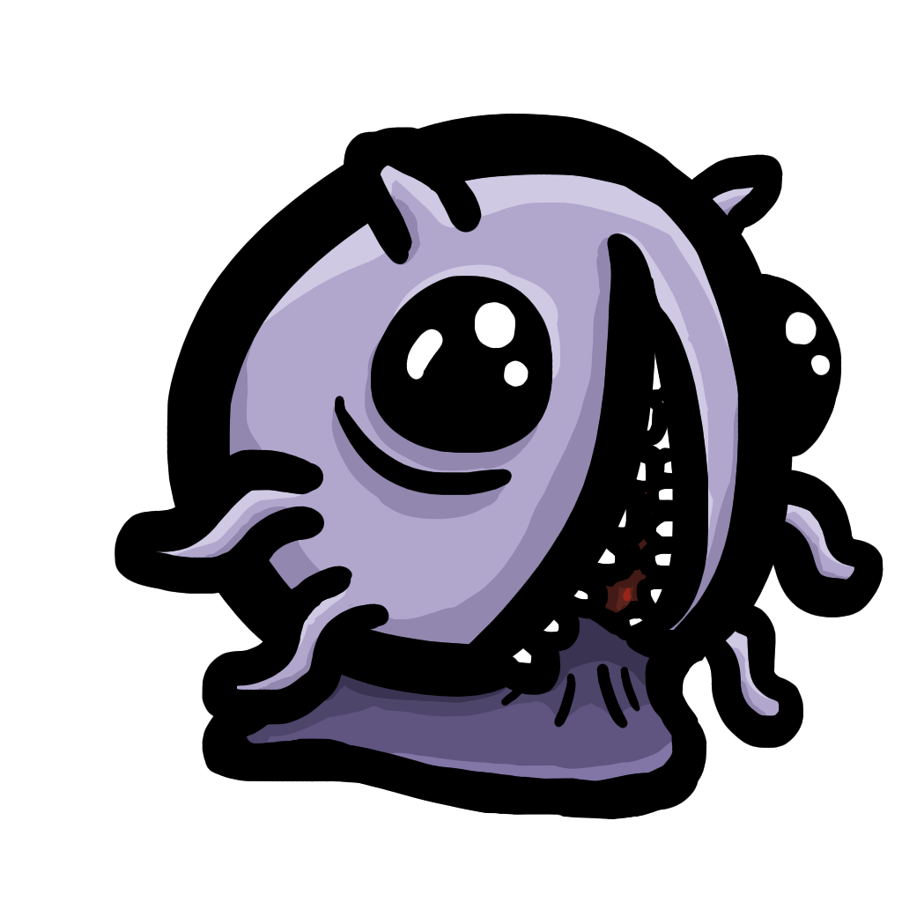
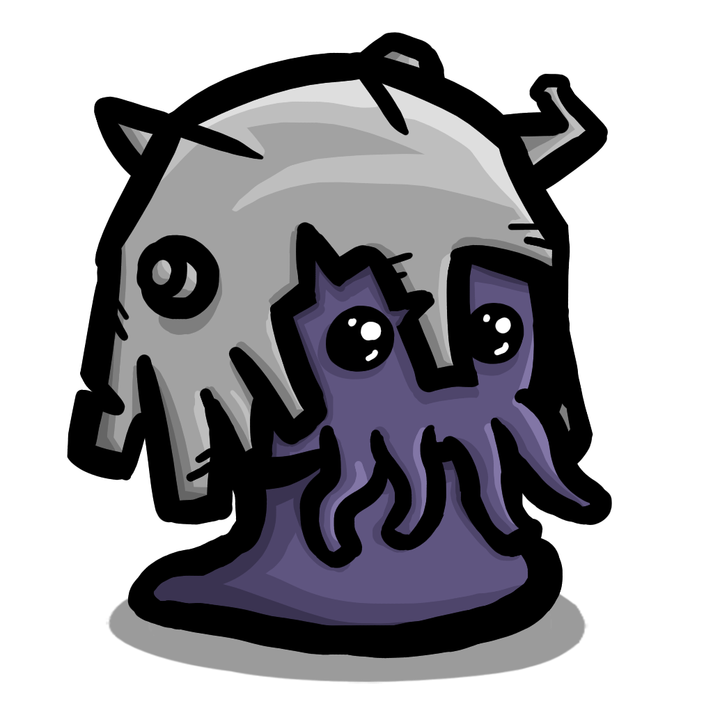
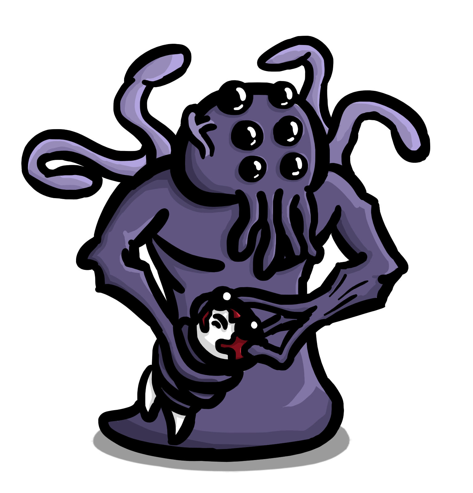
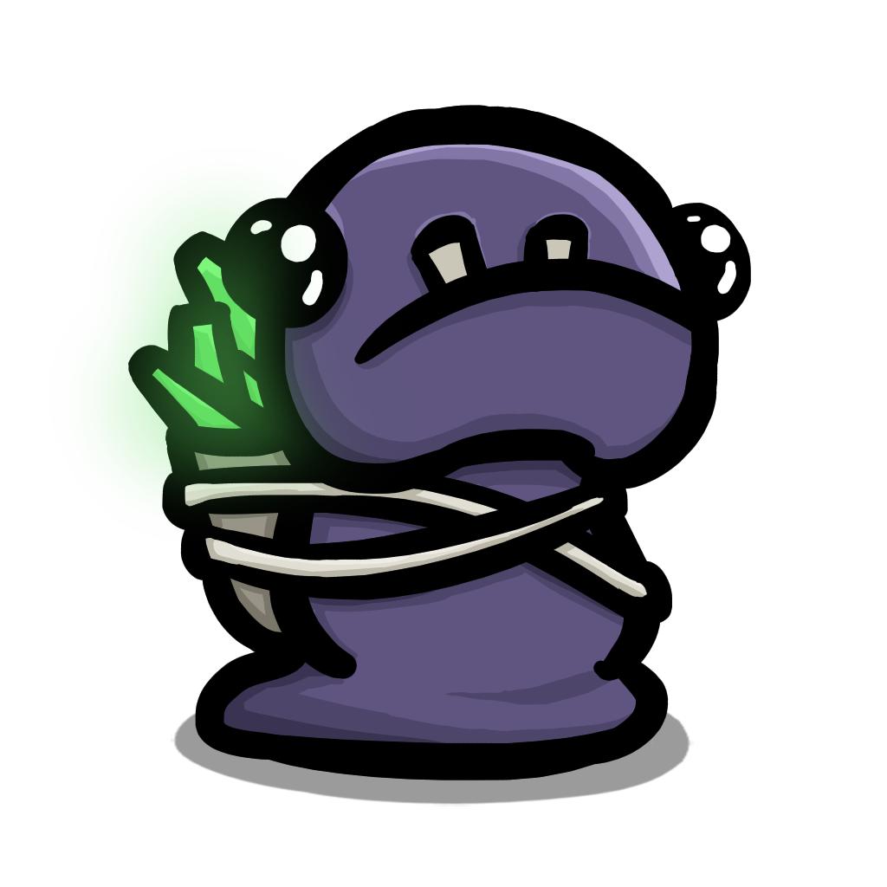
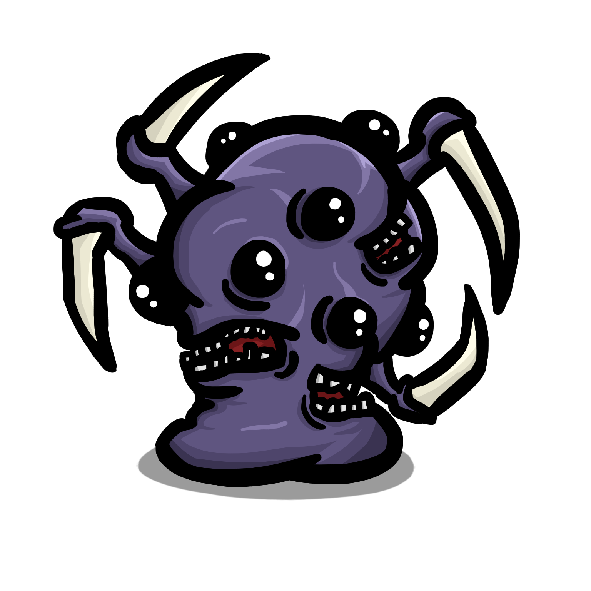
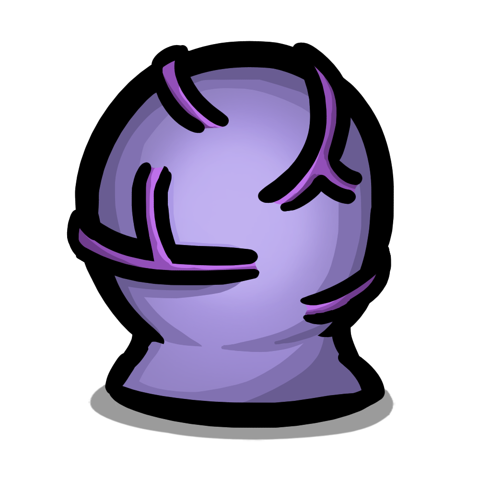
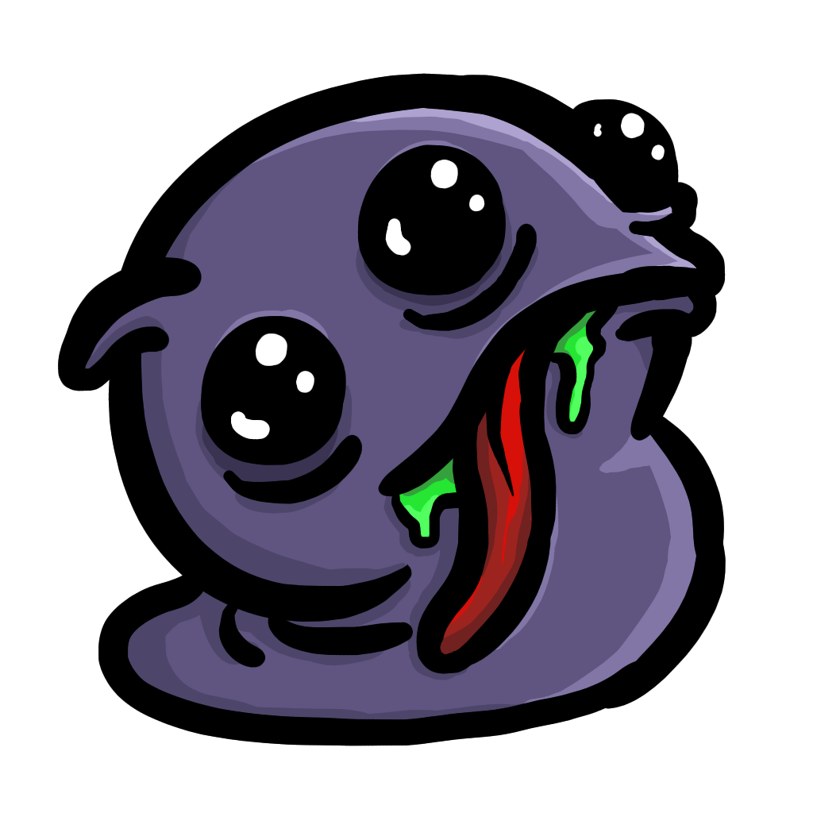

Számtalan veszély les rád! Ismerd meg a Brotato világának legkülönfélébb ellenségeit, akik hullámokban támadnak rád – mindegyik más taktikát és kihívást tartogat!
Üldözi a karaktert, hozzá érés esetén sebzést okoz

Zúzó
Üldözi a karaktert, 2,5-3,5 másodperces hűlési idővel tölthet, érintéskor sebzést okoz.

Üldöző
Üldözi a karaktert, érintéskor sebzést okoz, csoportosan jelenik meg.

Sisakos földönkívüli
Chases the character, deals damage on touch

Idéző
Két másodpercenként lövedékekből álló területet hoz létre a játékosok körül, amelyek egy másodpercnyi alapozás után spawnolnak.
Mutáció 1(75%HP/30 mp):
Több lövedék spawnol egy sokkal szélesebb területen a játékos körül.
Mutáció 2(40%HP/60 mp):
Sebessége 150%-kal nő, körbefutja a területet, és lövedékekből álló kört hoz létre a játékos körül.

Zsákmány idegen
Elfut a karaktertől, halálakor egy zsákmányládát és 8 anyagot dob le.
10% esélye van arra, hogy 25 másodperccel a hullám után, majd ezt követően 15 másodpercenként spawnol.

vágó
Követi a karaktert, elfut, ha túl közel van, függőlegesen vág, közepes távolságból okoz sebzést.

Vágó tojás
Mozdulatlanul marad, meghal és 5 másodperc múlva egy Slasher-t hoz létre, hacsak nem ölik meg.

Köpködő
Runs away from the character if too close, fires projectiles that deal damage on hit